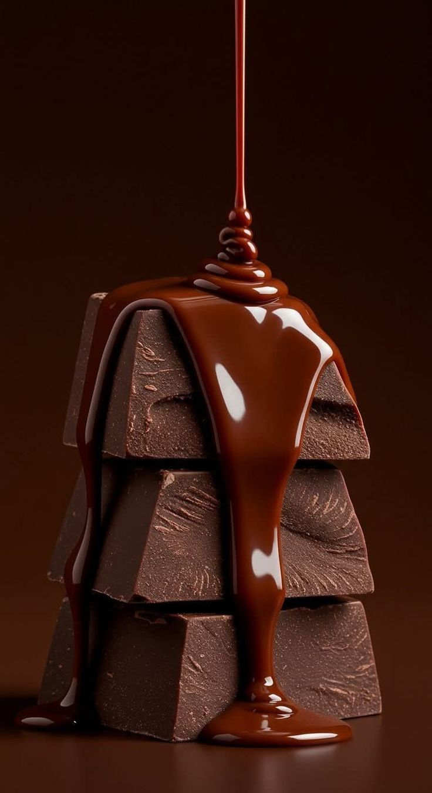
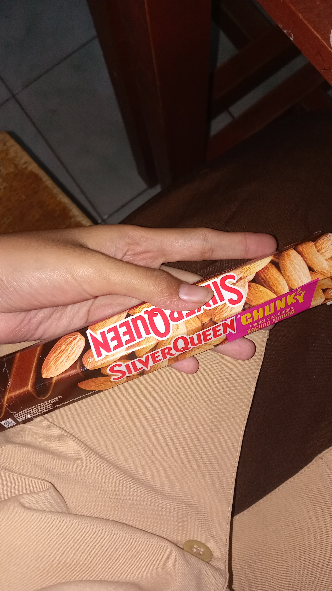

Coklat adalah rasa yang manis dan lembut, seperti gadis yang menyukai coklat dengan senyum yang sederhana namun penuh arti.
Setiap potong coklat menghadirkan kehangatan, mencair perlahan di lidah, meninggalkan jejak rasa yang sulit dilupakan.

Manisnya coklat bukan sekadar rasa, tetapi juga cerita.
Ia seperti perasaan yang tumbuh diam-diam, lembut namun dalam.
Seorang gadis yang menyukai coklat mungkin menemukan kebahagiaan sederhana dari setiap gigitan kecil yang penuh makna.

Coklat mengajarkan bahwa kebahagiaan tidak selalu harus besar dan megah.
Kadang cukup sederhana, seperti menikmati sore dengan coklat favorit, sambil membiarkan hati berbicara pelan tentang rasa yang mungkin sedang tumbuh.